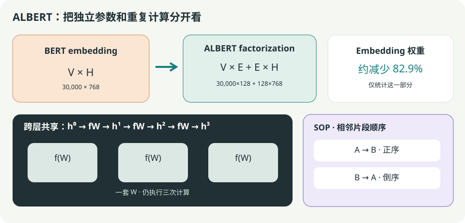

1. 一个模型为什么既占内存，又难继续变大
深度预训练 Encoder 的成本至少有四种不同来源：存储可训练权重的参数内存、训练时为反向传播保存的激活内存、优化器状态，以及真正执行的矩阵乘法 FLOPs。BERT 的词表 embedding 通常直接映射到隐藏维度；每个 Transformer 层又有一组独立的 attention/FFN 参数。扩大隐藏维度或深度，容易使参数和优化器状态明显增长。
ALBERT（A Lite BERT）提出两种参数削减手段：让词 embedding 的宽度不必等于 Transformer 隐藏宽度，以及让不同深度的 Transformer block 使用同一组或分组共享的权重。第三项改动 SOP（Sentence Order Prediction）是训练目标设计，用来加强跨句连贯性，不是进一步减少矩阵大小的技巧。

2. 把一个 V×H 的大表拆成 V×E 与 E×H
设词表大小 V、Transformer 隐藏宽度 H，传统 token embedding 参数约为 V·H。ALBERT 先查一个较窄的 V×E 表，再用 E×H 的线性投影映射到 attention/FFN 使用的隐藏宽度。只要 E 显著小于 H，尤其当 V 很大时，这个词嵌入模块就能省下大量参数。
用教学假设 V=30,000、H=768、E=128 代入，传统 token embedding 有 23,040,000 个权重；因式分解得到 3,840,000+98,304=3,938,304 个权重，约为原来的 17.1%。这是只算词 embedding 与投影的结果，不含 position/segment embedding、bias、Transformer 或预测头，更不等于整个模型节省 82.9%。
以 one-hot 的输入 token index 为起点，矩阵路径可以想成 id → [E] → [H] → [T,H]。模型深层仍按隐藏宽度 H 计算注意力和 FFN。因此词嵌入节省参数不意味着后续所有矩阵乘法都变成 E 宽。
4. 对“轻量”的三种不同回答
磁盘文件和参数内存：共享同一组 tensor 的 checkpoint 往往更小；但序列化框架如何保存、是否真正复用存储，需要看权重对象与导出格式。训练优化器状态：Adam 类优化器通常为每个独立参数维护动量和二阶矩，参数少往往有利于优化器内存。推理算力与延迟：仍经过多个 attention/FFN 调用，理论 FLOPs 不按参数减少比例同步下降；实际速度还受 memory bandwidth、kernel launch 和 batch size 等影响。
不应把“ALBERT-base 参数远少于 BERT-base”直接转译为“相同硬件、相同输入长度下推理必然快相同比例”。原论文强调参数与可扩展性的效果，延迟需要独立实测。
5. SOP 关注相邻片段的先后关系，而非主题不同
原始 BERT 的 Next Sentence Prediction（NSP）正例是相邻片段，负例通常来自不相邻、常来自其他文档的片段。这样一来模型可能只利用主题不一致便完成分类，而不一定学到真正的文本连贯性。
ALBERT 的 Sentence Order Prediction（SOP）从文档取两个连续片段 A 和 B：正例保留 A→B；负例使用同一对连续片段，只交换成 B→A。两个类别在主题内容上天然接近，模型必须更重视顺序与衔接。注意“连续片段”未必等于精确的一句自然语言，实际数据生成依 segmentation 策略而定。
SOP 不是把所有句子随机洗牌，让模型解一个排序题；参考实现中只是对相邻片段作二分类。官方训练数据代码对 sentence_order_label 的 0/1 定义需要和分类头一致，不能想当然把正类标记与实际代码颠倒。
6. 从消融实验看性能与参数之间的交换
ALBERT 论文 Table 4 对 ALBERT-base, E=128 不同共享方式给出对照：全共享约 12M 参数、该表 Avg 为 80.1；仅共享 attention 约 64M、Avg 为 81.7；不共享约 89M、Avg 为 81.6。这些是论文表 4 特定任务平均指标，不是 GLUE 官方 test 排行榜，更不是推理延迟。消融说明参数共享会改变容量与效果，不能笼统说“共享参数完全无损”。
Table 5 的 SOP/NSP/None 对照又针对句间训练目标；在其配置中 NSP 模型的 SOP 内在任务准确率约 52.0%，接近随机猜测。这支持“NSP 可能主要利用主题差异”的作者解释，但一个受控任务上的结果不是所有语料上 NSP 都毫无语篇信息的数学证明。
比较 ALBERT-xxlarge 与 BERT-large 时，还要核对模型配置、训练时长和优化超参数：参数数量少的网络可以用更宽隐藏层，在相似参数预算里投入大量 FLOPs，因此“少参数”与“少算力”是两条正交轴。
7. 哪些工程改写会破坏原意
- 只复制层参数数值：如果初始化时复制 12 份张量但随后各自训练，那么它们不是共享参数，梯度也不会汇集到同一个对象。
- 错误地设置 embedding 宽度：如果 tokenizer 词表 V 与 checkpoint 不匹配，即使形状能部分载入，ID 语义也会错误。
- 按参数量估算部署：必须另外测量 batch=1 / 多 batch 的延迟、内存和实际序列长度。
- 把 SOP 当成原始 NSP：负样本取法不同，任务难度与类别可学习线索都不同。
对部署而言，先确定任务需要的准确率，再沿参数量、峰值内存、吞吐和 p95 latency 分别画出 Pareto 边界；不同模型可能在不同约束下最优。
8. 交互：哪里节省了参数，哪里没有
参数预算拆分（固定教学配置）
词表 V=30,000，隐藏宽度 H=768，低维 embedding E=128，12 个 Transformer block。数值仅统计指定部分，不是完整模型。
传统 token embedding: 30,000 × 768 = 23,040,000 分解：30,000 × 128 + 128 × 768 = 3,938,304 本部分减少约 82.9% 的可训练权重。 不包含位置嵌入、Transformer block、bias 或预测头。
9. 交互：优化器状态账也能省，但计算不省
Adam 状态随独立参数变化（教学取值 P=1,000,000，L=12）
只按独立参数计优化器状态，不含激活、梯度缓冲与通信开销。
12 层非共享：独立主干参数 ≈ 12 × 1,000,000 = 12,000,000。 Adam 为每个独立参数存 m、v 两个张量 → 状态 ≈ 24,000,000。 参数越多，优化器状态内存越大。
关键结论
- 嵌入分解从
V·H改成V·E+E·H，只影响该 embedding 模块的参数，而非整个网络。 - 跨层共享是一套权重反复调用，各深度状态仍不同；参数显著下降并不代表同样比例的 FLOPs 下降。
- SOP 的负例是同一对连续片段交换顺序，和 BERT 的 NSP 随机其他片段负例不同。
- Table 4/5 的消融支持参数与表现存在权衡，比较时要注明任务、设置和指标含义。
论文与官方训练代码
- Lan et al., ALBERT: A Lite BERT for Self-supervised Learning of Language Representations，§3.1–3.3、§4.4–4.6、Tables 3–5。
- Google Research, ALBERT create_pretraining_data.py（SOP 正负对构造）。
- Google Research, run_pretraining.py（MLM+SOP 目标）。
- Transformers ALBERT 配置与输出接口。